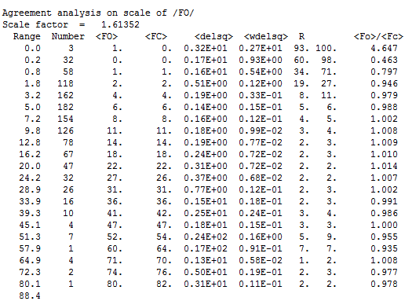
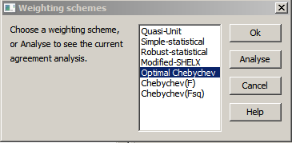

Weighting Schemes
ANALYSIS OF RESIDUALS w(Fo - Fc)**2 versus /Fc/

In the table, examine the weighted residual (headed w(delta)2, column 3 from
the right). Towards the end of a refinement, this should be approximately constant as a
function of Fo (or any other systematic ranking). If there is a systematic trend, then
there is a systematic trend in the data which has not been modeled in the structure.
You should verify that the structure is essentially correct, i.e. not in a false
minimum. In particular, check columns 2 and 3, sum Fo and sum Fc. If, towards the
bottom (i.e. strong reflections), <Fo>/<Fc> is substantially less than
unity, you may need to include an isotropic EXTINCTION parameter in the least squares.
Restore simple before starting the extinction parameter refinement.
If the parameters you are refining have 'reasonable' values, you should attempt to
correct the data for the <Fo>/<Fc> trend, or introduce suitable additional
parameters to the model.
If you can do neither of these, then you should modify the refinement weights to
minimise the problem.
In the absence of specific technical advice, try automatic weighting. CRYSTALS uses
different methods for F and F2 refinement. Choose the scheme which gives a
sufficiently constant distribution with the minimum number of parameters.
Occasional ranges having a large residual can be ignored in routine work.

CHOOSING WEIGHTS
It is dangerous to use a weighting scheme which has a dependancy on the mode
(e.g. Chebychev or SHELX) in the early stages since a poor model may adversely
down-weight important reflections. Unit Weights are usually excellent for refinement
against F Simple Staistical weights (in which the observed sigma(I) values are
augmented by a small contribution from the structure amplitude) are good for refinement
against F^2. Once the model is complete and the refinement is partially converged
CRYSTALS will try to select and optimise a weighting scheme for you.
QUASI-UNIT WEIGHTS
(w = 1.0 for F refinement, 1/(2F) for Fsq refinement)
This scheme is the most suitable for initial refinements, ie until the model is fully
parameterised. It is rarely advisable for the final refinement since it leads to poor
error estimates and will generate a checkcif error.
SIMPLE STATISTICAL WEIGHTS
(w=1/(SigmaSq + fixed modifier))
This scheme is most suitable for development stage refinement of good quality data free
from serious systematic error, and where the model is complete and well behaved.
ROBUST STATISTICAL
(w=1/(SigmaSq))
This scheme is suitable for the case where the bulk of the data has small systematic
errors, but may contain a few refelctions with serious casual errors, such as might
occur from a high pressure cell. Seriuous outliers are given a weight of zero.
MODIFIED SHELX
w= 1.0 / ( sigma^2 + (aP)^2 + bP ), P = (Fo + 2Fc)/3
or P=(Fo^2 + 2Fc^2)/3 depending on refinement against F or F^2.
This is a very popular weighting scheme. The parameters a and b are determined
automatically in order to give a goodness of fit of approximately one and a flat
analysis of variance across all ranges of Fc.
OPTIMAL CHEBYCHEV WEIGHTS
(w=function of residual)
This scheme is more flexible than the Modified SHELX scheme. It tries to compensate for
errors in both the data and the model, and give optimal values for those parameters
which are being refined. CRYSTALS tries to choose the optimal terms depending upon
whether the refinement is against F or Fsq
CHEBYCHEV(F)
Explicitly instruct CRYSTALS to optimise terms for refinement against F. May
sometimes be useful for refinement against Fsq if the errors have an unusual
distribution
CHEBYCHEV(Fsq)
Explicitly instruct CRYSTALS to optimise terms for refinement against Fsq. May
sometimes be useful for refinement against F if the errors have an unusual distribution